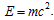

TITLE OF THE ARTICLE
X.Y. Author1, X.Y. Author21Affiliation
2Affiliation
E-mail:
Language: language of the article body. The abstract should be written as a single paragraph with a total length of no more than 60 words. Use 10 pt, Times New Roman, usual typeface. The indention of the paragraph is 0.5 cm, in a single column
format. Words that do not carry information, such as “In this work …”, “The authors would like to …”, should be omitted. The word “abstract” is not written.
PACS: (for an article in English) please supply one or two relevant PACS classification codes.
1. SECTION
1.1. SUBSECTION
The article is submitted as a hard copy simultaneously with its electronic version, prepared in the
Microsoft Word 2003
format as one file. The total length of the article is no more than 6 pages.
Language: English.According to Journal rules all articles should have abstracts in three languages: English, Russian and Ukrainian. Abstracts with title and author’s names should be placed at the end of article.
Notes for the foreign participants: translation of abstract into Russian and Ukrainian will be made according to English abstract by the members of editing group. The authors should take this requirement into account since it will have an effect on the size of article.
Authors from Former Soviet Union submit the text of the abstracts in Russian and English.
Authors from Former Soviet Union should submit an official letter from the organization where the work was done and the permission for open publication.
The general requirements for the article format are as follows:
The page format is А4. The margin: on the left is 2.5 cm, the rest ones are 2 cm. The single-spaced text type is in Times New Roman.
The title of the article and subheadings are typed in capital letters.
The title of the article, the names of author(s), affiliation(s) and the abstract are typed in one column. The main single-spaced text is typed in two columns, each being 8.0 сm in width, with 0.5 cm separation between the columns.
Figures and photographs must be supplied in a black-white format and inserted appropriately in the text. Symbols and inscriptions given in figures and photographs must be clear and legible. The positioning of large figures and formulas in one column is admissible.
2. MATERIAL IS LOCATED AS FOLLOWS
The article title: use 14 pt, bold uppercase typeface without indentions, the layout is centered.Authors (initials, names) and affiliation(s) (the full name of organization, town, country, electronic address, fax and phone numbers) are typed in 12 pt, bold italicized, without indention, centered.
Abstract.
PACS: - 10 pt.
The section: use 11 pt, the typeface is bold uppercase without indentions, centering.
The subsection: use 10 pt, the typeface is bold uppercase without indentions, centering.
There should be no points at the end of titles.
The article text: use 10 pt, the typeface is usual, the indention of the first line of the paragraph is 0.5 cm, the layout is across the width. The interword space must be one blank only. No space is admissible before the punctuation marks. Use the hard interword space (Ctrl+Shift+Space) between the value and its unit measure.
Figures must be inserted in the text in the simplest form without using such options as grouping, attachment, positioning before or after the text, etc. The example:
Fig.1 The caption below figure
The tables: use 10 pt, bold; the word “Table” must be on the right side. The caption below italicized centered no point at the end of the caption.
Formulas: The type size is 10 pt, the typeface is usual and the location is centered.

Formulas are numbered consecutively throughout the text using round brackets on the right-hand side of the line.REFERENCES
References are typed in 10 pt, usual typeface, with no indentions, across the full width.It is inadmissible to refer to unpublished papers. Please, adhere to the following schemes:
- Journals - authors (initials, names), the title of the article, the journal title in italic, year, volume and issue number, numbers of pages. For example: I.I. Ivanov, P.P. Petrov. Radiation swelling of NiSc // Problems of Atomic Science and Technology. Series “Nuclear Physics Investigations” (33). 2000, №1, p. 45-49.
- Book, preprints, etc. - author(s) (initials, names), the book title in italic, town, publishers, year of the issue, page numbers. For example: Р. Barret, D. Jonnson. Nuclear size and structures. Kiev: «Naukova dumka», 1981, p. 127-139.